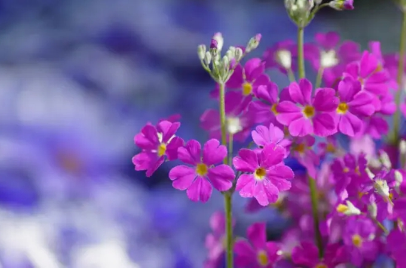

樱花草是希腊的水泽女神悲恋的化身

樱花草是希腊的水泽女神悲恋的化身。 有个无法言语的水泽女神爱上了英俊的青年， 但是青年的身边围绕着一群爱慕者。无法说话的水泽女神无法表达爱意，只能悲伤的在远处看着他离去。日复一日，水泽女神的生命渐渐消逝，虽然失去生命，但她的爱却继续深情地守候着这个青年。于是，在她死去的地方，长出了一朵朵可爱的小花，这就是樱花草。相信大家都特别好奇樱花草的各种知识吧，现在给您具体介绍下。
第一、樱花草
欧洲报春花又名欧洲樱草。为报春花科报春花属的多年生草本，常作一、二年生栽培。欧洲报春花为丛生植株，株高约20厘米。叶基生，叶长10－15厘米，长椭圆形，叶脉深凹。叶绿色。伞状花序，花色艳丽丰富，有大红、粉红、紫色、蓝色、黄、橙、白等色，一般花心为黄色。
樱花草的花语：樱草花的话语是 除你之外别无他爱。
别名：樱草，报春花，年景花， 欧洲樱草。
本站文章均来自互联网，仅供学习参考，如有侵犯您的版权，请邮箱联系我们删除！
 上一篇
上一篇